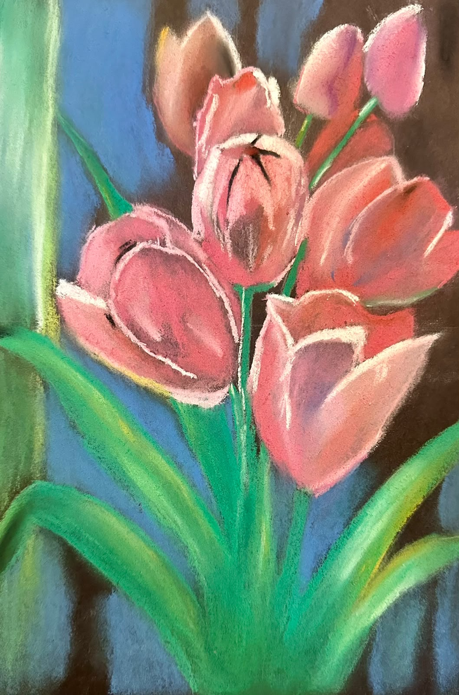

Licencia Creative Commons Zero (CC0).
La técnica de gises pasteles (o pintura al pastel) es uno de los medios artísticos más puros y directos en las artes visuales, ya que consiste en trabajar directamente con pigmento en polvo puro aglutinado en forma de barras cilíndricas o rectangulares, sin necesidad de pinceles, agua ni disolventes de por medio. Al aplicarlo sobre el soporte, el pigmento se adhiere directamente a las fibras del papel mediante la fricción, permitiendo una mezcla táctil y un cromatismo sumamente vibrante y aterciopelado.
Principales características
- Pureza e intensidad del color: Como las barritas están compuestas casi en su totalidad por pigmento puro y una mínima cantidad de aglutinante, los colores resultan extremadamente vivos, luminosos y con un acabado mate muy característico.
- Mezcla directa y matizada: No se requiere una paleta previa para mezclar tonos; los colores se funden directamente sobre el papel utilizando los dedos, difuminadores o mediante la superposición de capas y rayados (hatching).
- Inmediatez y expresividad: Es una técnica muy fluida que elimina las barreras entre el artista y la obra, permitiendo tanto trabajos de un realismo fotográfico impecable como trazos gestuales y muy pictóricos.
- Delicadeza y fragilidad: Al no utilizar líquidos fijadores durante el proceso de creación, el pigmento queda depositado de forma suelta sobre el papel, lo que hace que la obra sea delicada al tacto y requiera el uso de un fijador especial al finalizar para evitar que se despinte.
Materiales Necesarios
- Pasteles blandos (Soft Pastels): Son los más comunes. Tienen mayor proporción de pigmento y menor aglutinante, por lo que son muy suaves, cubrientes y fáciles de difuminar. Ideales para fondos y capas principales.
- Soporte de dibujo (Papel adecuado): El papel debe tener textura o "diente" (superficie rugosa o acanalada, como el papel de lija fino, papel Ingres o papel Canson Mi-Teintes) con un gramaje superior a los 160 g/m². La textura es indispensable para que las partículas de pigmento queden atrapadas y no se desprendan fácilmente.
- Herramientas de difuminado y aplicación: Los dedos o difumininos: Para fundir los colores suavemente sobre el papel (aunque muchos artistas prefieren los dedos para un control táctil directo). Pinceles de cerdas suaves: Útiles para barrer el exceso de polvo de pigmento sin manchar la obra.
- Elementos de fijación y limpieza: Fijador en spray para pastel: Un aerosol especial que sella la capa de pigmento una vez terminada la obra para evitar que se borre con el roce (debe aplicarse con precaución y a cierta distancia para no alterar los tonos). Toallitas húmedas o limpiador de manos: Indispensables, ya que es una técnica sumamente polvorienta que mancha las manos con facilidad.